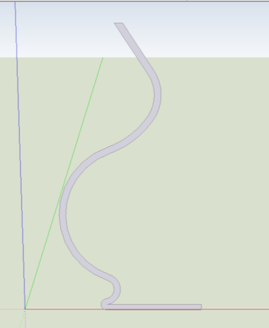

Квеста А
Пояснение к этапам
Инструменты
Изображение
Инструментом «Ластик» удаляем лишние элементы, чтобы получился каркас вазы.
Ластик

С помощью инструмента «Круг» в плоскости нижнего основания изображаем круг, который будет служить дном вазы.
Круг